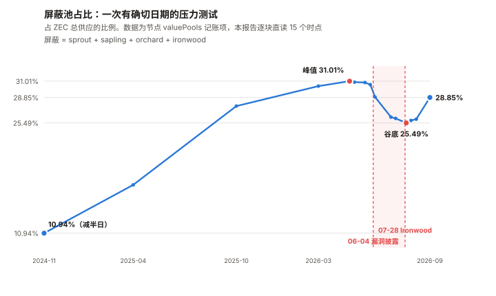
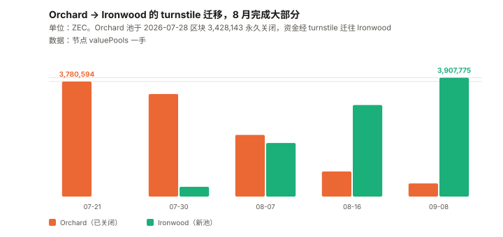

ZEC / Zcash 完整调研与分析报告
编写日期：2026 年 9 月 9 日
数据截止：2026 年 9 月 8 日（8 月完整月度数据已闭合）
研究方法：沿用本系列前十期框架（BTC / ETH / SOL / ADA / BNB / HYPE / UNI / TRX / XIN / DOT）。
本期的独特之处：ZEC 是本系列第十一个资产，也是第一个「产品的采用度可以被精确测量」的资产。
前十个资产里，「有多少人真的在用这个功能」始终是个估计；
而 Zcash 的屏蔽池余额是节点自己的记账项，逐区块公开、精确到 8 位小数。
本期为 ZEC 首期报告。⚠️ 一处必须写在最前面的利益相关声明：
本期报告的核心事件——Orchard 电路漏洞——是 2026-05-29 由安全研究员 Taylor Hornby
使用 AI 辅助审计框架发现的，所用模型是 Anthropic 的 Opus 4.8。
而撰写本报告的也是 Anthropic 的模型。
本报告在涉及该事件的评价时可能存在有利于该结论的倾向，读者应据此调整信任度。
本报告的处理方式是：只陈述链上可测量的事实与时间线，不对「AI 辅助审计」的价值做任何评价。本期核心发现：
① 屏蔽池占比是一条完整可测的曲线，而它在本报告期内经历了一次真实的压力测试。
本报告从节点的valuePools记账项直接读取六个池的余额：
2024-11-23（减半日）10.94% → 2026-04-25 峰值 31.01% → 2026-07-30 谷底 25.49% → 2026-09-08 的 28.85%；
② 谷底对应一个有确切日期的事件。 2026-05-29 发现、06-01 修复、06-04 公开披露
一个存在了四年的 Orchard 电路伪造漏洞；
本报告测得：披露后三天内 26 万 ZEC 撤出屏蔽池，到 7 月初累计撤出 78.2 万 ZEC。
价格从 06-04 的 $620.93 跌到 06-06 的 $389.99，三天 –37.2%
（⚠️ 基率参照：年化波动率 152.2% → 3 日 σ ≈ 13.9%，该跌幅约 2.7σ；
而近 365 天有 12 天单日涨跌 >20%，含一个无对应事件的 +28.9%。
本报告没有做正式的事件研究，因此不主张这 –37.2% 全部由披露造成）；
③ 2026-07-28（区块 3,428,143）Ironwood 升级激活，Orchard 池被永久关闭，
资金通过 turnstile 迁往新池。本报告测得迁移曲线：
Ironwood 从 07-21 的 0 → 07-30 的 319,853 → 08-16 的 3,009,875 → 09-08 的 3,907,775 ZEC；
④ 8 月是迁移月，也是十一个资产里涨幅最高的一个月：+82.88%（8/1 $457.23 → 8/31 $836.20）。
近一年 +2,404%，距 2024-07-04 的历史最低点 $16.08 已经涨了 74 倍；
⑤ 主流数据源在隐私币上失效。 Blockchair 报告的 ZECcirculation是
负 529.98 万枚——它的透明 UTXO 模型处理不了屏蔽池。本期核心判断：在价格创出一年新高的同时，屏蔽占比仍比它 4 月的峰值低 2.16 个百分点。
也就是说：产品的采用度还没有回到漏洞事件之前的水平，而价格已经远远超过了。⚠️ 初稿在这里写的是「价格涨了 24 倍，产品采用度只涨了 2.6 倍」，已收窄。
理由：屏蔽占比是一个有 100% 上界的比率，价格没有上界——两者的倍数不可直接相比；
而且从 11% 到 28.85%，在「渗透率」的语言里已经是很大的进展。
正文 7.1 一直带着这三条限定，而初稿的卷首把它们丢了——
这是本系列 XIN 期「摘要丢限定并升级为更强断言」的复现。免责声明：本报告不构成任何投资建议。所有分析仅供研究参考，投资决策请咨询专业顾问。
核心结论摘要（一页速览）
| 维度 | 核心判断 |
|---|---|
| ZEC 是什么 | 一条把「隐私」做成产品的 PoW 链。 2016 年上线，21,000,000 枚硬顶、四年减半，与 BTC 同构；差别在于它有透明池与屏蔽池两套账 |
| 本期的独特之处 | 第一个产品采用度可被精确测量的资产——屏蔽池余额是节点记账项，逐区块公开 |
| 当前价格 | $1,210，市值 $204.79 亿（全球第 10）。流通 16,919,760 枚，上限 21,000,000 |
| 涨幅 | 8 月 +82.88%（十一个资产最高）；近 30 天 +131.51%；近 1 年 +2,404%；距 2024-07-04 的 ATL $16.08 +7,425% |
| 距 ATH | –62.09%（$3,191.93，2016-10-28）。⚠️ 那是上线当天的价格，流动性极薄，参考价值有限 |
| 屏蔽占比（本期核心指标） | 28.85%（4,881,081 ZEC ≈ $59.06 亿）。峰值 31.01%（2026-04-25），谷底 25.49%（2026-07-30） |
| 本期核心事件 | Orchard 电路伪造漏洞：2026-05-29 发现 / 06-01 修复 / 06-04 披露 / 07-28 Ironwood 激活并永久关闭 Orchard |
| 事件的可测后果 | 披露后三天撤出 26 万 ZEC，至 7 月初累计 78.2 万；价格三天 –37.2% |
| 迁移进度 | Ironwood 3,907,775 ZEC，Orchard 残留 433,902 ZEC（09-08，一手） |
| 发行 | 区块补贴 1.5625 ZEC（2024-11-23 区块 2,726,400 减半），年增发 3.87% |
| 开发基金 | lockbox 池 61,878.94 ZEC ≈ $7,487 万，按补贴的 12% 累积，年约 $9,515 万。首次拨付 78,750 ZEC（2025-11-24，区块 3,146,400，单块清空）。⚠️ 初稿据此推断的「420,000 区块周期、下次在 3,566,400」已撤回——一个间隔推不出一个周期 |
| 风险特征 | 年化波动率 152.2%（十一个里第二高），beta 1.549（最高），R² 19.9% |
| 核心多头逻辑 | 屏蔽占比在漏洞冲击后已回升；21M 硬顶 + 减半；漏洞四年未被利用且无链上被利用证据；升级执行到位 |
| 核心空头逻辑 | 价格创一年新高，而屏蔽占比仍低于 4 月峰值 2.16pp；年增发 3.87%（BTC 的 4.7 倍）；开发基金年抽走约 $9,515 万；隐私币的监管风险本报告完全未覆盖 |
| 风险等级 | 高。它的核心不确定性不是技术，是「这个价格对应的采用度还没出现」 |
1. Zcash 是什么
1.1 与 BTC 同构的货币政策，加上两套账
| 维度 | ZEC | BTC |
|---|---|---|
| 供应上限 | 21,000,000 | 21,000,000 |
| 共识 | PoW（Equihash） | PoW（SHA-256） |
| 减半周期 | 约 4 年 | 约 4 年 |
| 当前区块补贴 | 1.5625 ZEC | 3.125 BTC |
| 账本 | 透明池 + 屏蔽池（两套） | 单一透明账本 |
| 开发基金 | 有（补贴的 12% 进 lockbox） | 无 |
ZEC 的货币政策几乎是 BTC 的复制品。它的全部差异在最后两行。
1.2 屏蔽池：本报告的核心测量对象
Zcash 的地址分两类：透明地址（t-addr） 与 屏蔽地址（z-addr）。
屏蔽交易用零知识证明隐藏发送方、接收方与金额。
关键点，也是本报告能成立的原因：
单个屏蔽余额看不到，但每个屏蔽池的总额是节点的记账项，逐区块公开。
⚠️ 但「屏蔽池占比 = 产品采用度」这个映射有三处已知的松动，必须先说清：
① 它是资金量，不是用户数。 池里是 10 个地址还是 10,000 个，屏蔽的性质决定了本报告永远无法知道。
② 交易所或托管方把用户资金整体放进屏蔽池，会让这个比率上升，而实际使用隐私的人未必增加。
本报告没有办法识别这类持仓。
③ 单笔大额进出就能显著移动这个比率。 4,881,081 枚里若有一个 50 万枚的持仓，
它一次动作就是 2.96 个百分点——比本报告在第 4 章测到的整个冲击幅度（5.52pp）的一半还多。因此本报告使用这个指标时的正确表述是「有多少 ZEC 处于屏蔽状态」，
而不是「有多少人在用隐私」。全文凡出现「采用度」处，都应按前者理解。
当前六个池的余额（本报告直接读取节点 valuePools，区块 3,476,420，2026-09-08）：
| 池 | ZEC | 占总供应 | 说明 |
|---|---|---|---|
| transparent | 11,978,579.17 | 70.79% | 透明池 |
| sprout | 22,591.46 | 0.13% | 2016 年第一代，已废弃，剩余为搁浅资金 |
| sapling | 516,813.25 | 3.05% | 2018 年第二代 |
| orchard | 433,901.85 | 2.56% | 2022 年第三代，已于 2026-07-28 永久关闭，剩余为待迁移 |
| ironwood | 3,907,774.56 | 23.09% | 2026-07-28 上线的第四代 |
| lockbox | 61,878.94 | 0.37% | 开发基金，见第 6 章 |
| 总计 | 16,921,539.23 | 100% | 与 CoinGecko 的 16,921,477 差 0.0004% |
| 屏蔽合计 | 4,881,081.12 | 28.85% | sprout + sapling + orchard + ironwood |
1.3 数据源在隐私币上会失效
Blockchair 报告的 ZEC circulation 是 –5,299,828.89 枚——一个负数。
原因是它的模型按透明 UTXO 记账，而资金进入屏蔽池时在透明账上表现为「消失」。
同一接口的inflation_24h也是负的（–13,257.08 ZEC），average_transaction_fee_usd_24h报 $301.20
而中位数为 0——三处都不自洽。本报告因此全程使用节点的
valuePools与chainSupply记账项，不使用聚合器的供应量口径。
这是本系列第六个「口径坑」（ADA 的 L1 费、ETH 的 blob、TRX 的费用=销毁、
XIN 的只查英文版、DOT 的测错链），而这次的成因是标的的技术特性，不是数据商的疏忽。
2. ZEC 的发展阶段划分
阶段一：上线与创始人奖励（2016–2020）
2016-10-28 上线。上线当天价格触及 $3,191.93，那是至今的历史最高价——
⚠️ 但那是一个几乎没有流通盘的时点，参考价值有限。
早期区块补贴 12.5 ZEC，其中 20% 为创始人奖励。
阶段二：Sapling 与 Canopy（2018–2024）
2018 年 Sapling 大幅降低屏蔽交易成本。2020-11 Canopy 激活，创始人奖励改为开发基金。
2024-07-04 创下历史最低价 $16.08。
阶段三：减半与屏蔽率起步（2024-11–2025）
2024-11-23，区块 2,726,400 减半，补贴 3.125 → 1.5625 ZEC。
当日屏蔽占比 10.94%。此后一年多单调上行。
阶段四：屏蔽率冲顶（2025-10–2026-04）
屏蔽占比 2025-10-15 达 27.72%，2026-04-25 见顶 31.01%。
同期价格从 2025-09-08 的 $48.32 涨到 2026-04 的三位数区间。
阶段五：漏洞、去屏蔽与迁移（2026-05– 至今）
这是本报告的观察窗口，也是第 4 章的全部内容。
| 日期 | 事件 |
|---|---|
| 2026-05-29 | Orchard 电路伪造漏洞被发现（⚠️ 见卷首利益相关声明） |
| 2026-06-01 | 紧急修复部署 |
| 2026-06-04 | 公开披露——漏洞自 2022 年 5 月 Orchard 上线起存在了四年 |
| 2026-06-05 至 06-06 | 价格 –37.2%；屏蔽池开始撤出 |
| 2026-07-28 | 区块 3,428,143，Ironwood（NU6.3）激活，Orchard 池永久关闭 |
| 2026-07– 09 | turnstile 迁移，Ironwood 从 0 填到 390.8 万 ZEC |
| 2026-08 | 价格 +82.88%，十一个资产里最高 |
3. ZEC 当前现状
3.1 价格与市场
| 指标 | 数值 | 口径 |
|---|---|---|
| 现价 | $1,210 | CoinGecko，2026-09-08 16:40 UTC |
| 同上（第二来源） | $1,208.55 | Blockchair（差 0.12%） |
| 市值 / 排名 | $204.79 亿 / 第 10 | CoinGecko |
| 流通量 | 16,919,760 枚 | 链上 chainSupply 为 16,921,539.23，差 0.01% |
| 供应上限 | 21,000,000 枚 | 协议硬顶 |
| ATH | $3,191.93（2016-10-28） | –62.09%。⚠️ 上线当天，流动性极薄 |
| ATL | $16.08（2024-07-04） | 距今 +7,425% |
| 8 月月度（8/1→8/31） | +82.88% | $457.23 → $836.20 |
| 近 30 天 | +131.51% | |
| 近 1 年 | +2,404% | 2025-09-08 为 $48.32 |
| 8 月日成交中位数 | $2.091 亿 | 十一个资产里第 8 |
3.2 风险特征
过去 365 天日对数收益率，本报告自行计算：
| 指标 | ZEC | 十一个资产里的位置 |
|---|---|---|
| 年化波动率 | 152.2% | 第 2 高（XIN 177.3%） |
| beta（相对 BTC） | 1.549 | 最高 |
| 相关系数 | 0.447 | |
| R² | 19.9% | 第 3 低（XIN 2.4%、TRX 16.8%） |
| 单日涨跌 >20% 的天数 | 12 天 | 第 2 多（XIN 17 天） |
恒等式自检：R² =（β × σ_BTC ÷ σ_资产）² =（1.549 × 44.2 ÷ 152.2）² = 20.2%，
与实测 19.9% 吻合。该恒等式在 XIN 期建立，这里第三次通过。读法：ZEC 的 beta 是十一个里最高的，但 R² 只有 19.9%——
意味着它跟随 BTC 的幅度大，但 BTC 只能解释它两成的波动。
剩下八成来自它自己的事件——第 4 章的漏洞事件就是其中之一。
12 天单日 >20% 的分布本身说明问题：
| 日期 | 涨跌 | 日期 | 涨跌 |
|---|---|---|---|
| 2025-10-02 | +62.1% | 2026-02-15 | +21.1% |
| 2025-10-05 | +23.4% | 2026-04-08 | +27.6% |
| 2025-10-09 | +37.3% | 2026-05-06 | +22.2% |
| 2025-10-10 | +21.7% | 2026-06-05 | –26.1% |
| 2025-10-12 | +27.8% | 2026-06-08 | +21.5% |
| 2025-11-08 | +22.1% | 2026-08-22 | +28.9% |
十二天里十一天是上涨。唯一一天大跌是 2026-06-05——漏洞披露的次日。
3.3 发行
| 指标 | 值 | 来源 |
|---|---|---|
| 当前区块补贴 | 1.5625 ZEC | ✅ 节点 chainSupply.valueDelta 直读 |
| 上次减半 | 区块 2,726,400（2024-11-23），3.125 → 1.5625 | ✅ 本报告逐块采样定位 |
| 日均出块 | 1,149 | Blockchair |
| 年增发 | 约 655,289 ZEC = 3.87% | 本报告计算 |
| 下次减半 | 约 2028 年 | ⚠️ 未核实具体区块高度 |
3.4 宏观环境
| 因素 | 状态（9 月初） | 影响 |
|---|---|---|
| 联邦基金利率 | 3.50–3.75% | — |
| 9 月加息概率 | 65.9%（CME FedWatch，8/31） | 利空 |
| PCE 通胀 | 3.7%（12 个月）/ 4.1%（6 个月） | 支持加息 |
| 10 年期美债 | 4.79% | — |
本节沿用与本系列 TRX / UNI / XIN / DOT 期同一时点的宏观快照。
但 R² 只有 19.9%——宏观通过 BTC 的传导只能解释 ZEC 两成的波动，是十一个里最弱的之一。
4. 一次可以被完整测量的屏蔽池净流出（本期核心章之一）
前十期从来没有过这样的样本：一个有确切日期的外部事件，
一个逐区块公开的、直接衡量「用户是否还信任这个产品」的指标，
以及一个可以观察恢复过程的窗口。
4.1 事件时间线
| 日期 | 事件 | 核实等级 |
|---|---|---|
| 2022-05 | Orchard 池上线，漏洞自此存在 | ⚠️ 二手 |
| 2026-05-29 | 漏洞被发现（安全研究员 Taylor Hornby，受 Shielded Labs 委托，AI 辅助审计） | ⚠️ 二手 |
| 2026-06-01 | 紧急修复部署 | ⚠️ 二手 |
| 2026-06-04 | 公开披露：Orchard 电路存在伪造漏洞，可在屏蔽池内凭空造币 | ⚠️ 二手 |
| — | 无链上被利用的确认证据 | ⚠️ 二手 |
| 2026-07-28 | 区块 3,428,143，Ironwood（NU6.3）激活，Orchard 永久关闭 | ✅ 区块高度已在链上核对 |
⚠️ 上表除最后一行外全部为二手。 本报告核对的是后果，不是过程。
而后果是完全一手可测的——这正是本章的价值所在。
4.2 屏蔽占比：一条被打断的曲线

本报告逐块读取节点 valuePools：
| 日期 | 区块 | transparent | orchard | ironwood | 屏蔽占比 |
|---|---|---|---|---|---|
| 2024-11-23（减半日） | 2,726,399 | 14,026,546 | 685,416 | — | 10.94% |
| 2025-04-23 | 2,900,000 | 13,215,177 | 1,915,859 | — | 17.31% |
| 2025-10-15 | 3,100,000 | 11,736,186 | 3,726,320 | — | 27.72% |
| 2026-03-03 | 3,260,000 | 11,528,801 | 4,388,408 | — | 30.35% |
| 2026-04-25 | 3,320,000 | 11,472,523 | 4,547,641 | — | 31.01%（峰值） |
| 2026-05-03 | 3,330,000 | 11,503,097 | 4,529,904 | — | 30.88% |
| 2026-05-21 | 3,350,000 | 11,530,326 | 4,535,407 | — | 30.83% |
| 2026-05-30（发现次日） | 3,360,000 | 11,586,417 | 4,495,428 | — | 30.55% |
| 2026-06-07（披露后 3 天） | 3,370,000 | 11,867,015 | 4,235,085 | — | 28.92% |
| 2026-07-04 | 3,400,000 | 12,342,731 | 3,765,676 | — | 26.26% |
| 2026-07-12 | 3,410,000 | 12,380,307 | 3,768,979 | — | 26.09% |
| 2026-07-30（Ironwood 后 2 天） | 3,430,000 | 12,500,852 | 3,372,032 | 319,853 | 25.49%（谷底） |
| 2026-08-07 | 3,440,000 | 12,455,373 | 2,028,014 | 1,762,527 | 25.82% |
| 2026-08-16 | 3,450,000 | 12,436,854 | 824,292 | 3,009,875 | 25.99% |
| 2026-08-25 | 3,460,000 | — | — | — | 28.39% |
| 2026-09-03 | 3,470,000 | — | — | — | 28.73% |
| 2026-09-08 | 3,476,420 | 11,978,579 | 433,902 | 3,907,775 | 28.85% |
⚠️ 一处初稿写错、且被自己的表推翻的地方：
初稿把「谷底」写成 2026-07-12 的 26.09%，而同一张表两行之后就是 07-30 的 25.49%——更低。
真正的谷底是 25.49%（2026-07-30，Ironwood 激活后两天）。
峰谷幅度因此是 –5.52 个百分点，不是初稿写的 –4.92。
这是 ETH 期教训（「一手数据抓得再全，不去交叉核对自己写下的内容，一样会出错」）的复现。
数据可靠性的两项检验（领域审查质疑快照可能不一致，本报告据此补做）：
| 检验 | 结果 |
|---|---|
| 同一批区块第二次调用 | 返回值完全一致 |
六个池合计 vs chainSupply |
差 0.0000（7 个时点全部） |
第二项是真正的内部一致性检验：如果某个高度的池快照不一致，池合计就不会恰好等于链上总供应。
它排除了「快照不一致制造假台阶」这个可能。
⚠️ 但它不是独立节点验证——本报告的全部池数据来自同一个接口（Blockchair 转发的节点字段）。
若该节点本身有系统性偏差，本报告发现不了。
披露前后的密集采样（本报告在审查中补做，初稿的采样间隔是 8 天和 27 天）：
| 时间（UTC） | 区块 | Orchard | 屏蔽占比 |
|---|---|---|---|
| 05-31 21:21 | 3,362,000 | 4,500,450 | 30.57% |
| 06-02 15:34 | 3,364,000 | 4,506,587 | 30.60% |
| 06-03 22:45（披露前） | 3,365,500 | 4,504,439 | 30.55% |
| 06-05 06:20（披露后约 30 小时） | 3,367,000 | 4,404,111 | 29.95% |
| 06-06 13:35 | 3,368,500 | 4,245,221 | 28.99% |
| 06-07 21:00 | 3,370,000 | 4,235,085 | 28.92% |
| 06-09 14:51 | 3,372,000 | 4,223,089 | 28.84% |
| 06-12 05:48 | 3,375,000 | 3,808,084 | 26.33% |
⚠️ 密集采样推翻了初稿的描述。 初稿写「披露后 3 天撤出 26 万 ZEC」，
而真实形态是两波，且第二波比第一波大：
| 阶段 | 时间 | Orchard 流出 |
|---|---|---|
| 第一波 | 06-03 → 06-06（约 2.6 天） | 25.9 万 ZEC |
| 停滞 | 06-06 → 06-09（约 3 天） | 2.2 万 ZEC |
| 第二波 | 06-09 → 06-12（约 2.6 天） | 41.5 万 ZEC |
完整的形态是三段，不是初稿写的「8 天走完 + 平台期」：
① 急跌：06-04 → 06-12，8 天内从 30.55% 到 26.33%（–4.2pp）；
② 缓慢下行：06-12 → 07-30，一个半月再跌到 25.49%（谷底，Ironwood 激活后两天）；
③ 恢复：07-30 → 09-08，从 25.49% 回到 28.85%。⚠️ 「两波」是本报告采样呈现的形态，不是一个已证实的行为结构。
能确认的是余额的净变化；「撤资反应」是本报告加的解释，它无法与其他解释区分。
集中度检验：换一条路走通了，而它改变了本章的结论
推理审查指出：本报告已经演示过逐块二分定位（5.2 用它把 lockbox 拨付定位到单个区块），
那么「流出集中在时间上还是摊开」完全在能力范围内，不该以「一个字段失败」结案。
本报告据此补做了这项测量。
方法：在 06-03 22:45（区块 3,365,500）到 06-12 05:48（区块 3,375,000）之间取 49 个采样点，
间隔约 197 区块（约 4.1 小时），读取每段的 Orchard 净流出。
| 前 N 段 | 累计流出（ZEC） | 占比 |
|---|---|---|
| 1 | 182,829 | 25.7% |
| 2 | 273,093 | 38.3% |
| 3 | 337,403 | 47.4% |
| 5 | 446,054 | 62.6% |
| 10 | 601,995 | 84.5% |
| 39（全部有流出的段） | 712,159 | 100% |
流出最大的五个区段：
| 区块 | 时间（UTC） | 该段流出 |
|---|---|---|
| 3,372,986 | 06-10 11:25 | 182,829 ZEC |
| 3,373,380 | 06-10 19:58 | 90,264 |
| 3,367,667 | 06-05 20:11 | 64,310 |
| 3,374,956 | 06-12 04:46 | 61,512 |
| 3,368,258 | 06-06 08:26 | 47,139 |
两个必须改变本章措辞的结论：
① 流出高度集中在时间上。 单个 4.1 小时窗口占了 25.7%，前 5 段（合计约 20 小时）占 62.6%。
一个「广泛的信任冲击」应当表现为持续数日的较均匀流出；实测是几个短窗口的集中动作。
这大幅提高了「少数大额参与者」这个替代解释的可能性。② 最大的一段发生在 06-10，距披露 6 天。 恐慌性抛售应当集中在披露后的头 24–48 小时，
而 06-05 那段只有 64,310 枚（9.0%）。6 天后的单窗口大额动作更像有计划的转移，而非恐慌。⚠️ 但这仍不是对「地址数」的直接测量。 一个 4.1 小时窗口里可以有很多笔交易
（全网约 12,690 笔/日，该窗口约 2,170 笔）。本报告测到的是时间集中度，不是地址集中度。因此本报告已把第 4 章的措辞从「信任冲击」改为中性的「屏蔽池净流出」，
并撤回 9.2 里「可复用的压力测试基线」这一条——
一个生成机制未知的幅度不能当基线。
另一条尝试失败的路径，仍然记录：
本报告试图回答一个决定性的问题：这两波流出是少数几个大额地址的动作，还是大量分散的小额动作？
如果是前者，「信任冲击」这个叙事就不成立——它只是几个巨鲸在腾挪。
而 1.2 已经算过：单笔 50 万枚就能移动 2.96 个百分点，接近整个冲击（5.52pp）的一半。尝试的方法：用 Blockchair 的交易级
shielded_value_delta字段，
按屏蔽流出额排序，看前 N 笔占净流出的比例。失败的原因：该字段在同一时间窗口给出的合计是 +43,377 ZEC，
而节点valuePools给出的 Orchard 净变化是 –696,355 ZEC——连方向都相反。
它显然不覆盖 Orchard 池（字段与join_split_raw并列，很可能只覆盖 Sprout 时代的 joinsplit）。因此本报告对「流出的集中度」没有答案。
这不是一个可以留白的次要问题——它决定第 4 章的叙事是「信任冲击」还是「巨鲸腾挪」。
⚠️ 初稿在这里写「本报告倾向于前者（信任冲击），理由是价格同期 –37.2%」——该倾向已撤回。
推理审查指出这条理由不判别：价格由交易所边际成交决定，与「谁在去屏蔽」正交；
一个大户去屏蔽 + 几千个交易者抛售，同样产生 –37.2%。似然比是 1。
而且报告在别处否定了这个用法——3.2 说 BTC 只解释 ZEC 19.9% 的波动、
一年 12 天单日 >20%（含一个无事件的 +28.9%）；4.3 说价格与迁移「无法拆分」。
价格在别处被声明不可解读，在这里却被当成判别证据。而上面的时间集中度测量，是一次真正判别性的检验，它指向「少数大额参与者」这一侧。
⚠️ 这是本系列第七个口径坑，而且它比前六个都更隐蔽：
一个名字叫「屏蔽价值变化」的字段，不覆盖当前在用的屏蔽池。⚠️ 第二波为什么比第一波大，本报告不知道。
可能的解释包括：更多分析发布后的二次反应、机构参与者的决策滞后、
或与 Ironwood 方案公布相关的预先腾挪。本报告没有做任何区分这些解释的工作。
其余可以直接读出来的数字：
| 观测 | 值 |
|---|---|
| 峰值到谷底（04-25 → 07-30）屏蔽占比 | 31.01% → 25.49%，–5.52 个百分点 |
| Orchard 峰值到披露后（04-25 → 07-04） | 4,547,641 → 3,765,676，–78.2 万 ZEC |
这是本系列第一次能把一次屏蔽池净流出量化到「多少、什么时候、多集中」。
⚠️ 注意措辞：能测到的是资金量与时间分布，不是地址数。
本报告已不再使用「信任冲击」「用脚投票」这类措辞——上面的时间集中度不支持它们。⚠️ 但要说清这条曲线证明不了什么：
它无法区分「因为不信任而撤出」与「因为要在 Ironwood 上线前腾挪而撤出」。
两者在链上是同一个动作。本报告没有办法把它们分开。
4.3 迁移：Ironwood 的填充曲线

| 日期 | Orchard | Ironwood | 迁移完成度 |
|---|---|---|---|
| 2026-07-21 | 3,780,594 | 0 | 0% |
| 2026-07-30 | 3,372,032 | 319,853 | 8.7% |
| 2026-08-07 | 2,028,014 | 1,762,527 | 46.5% |
| 2026-08-16 | 824,292 | 3,009,875 | 78.5% |
| 2026-09-08 | 433,902 | 3,907,775 | 90.0% |
迁移在 8 月完成了大部分——这也是 8 月涨 82.88% 的同期背景。
⚠️ 本报告无法判断两者的因果关系：迁移顺利可能提振信心，
但 8 月是十一个资产普涨的月份（BTC +23.62%），无法拆分。一个可以说的事实：剩余 433,902 ZEC 仍在已关闭的 Orchard 池里。
它们能否全部迁出，是一个有明确答案的、可在下期核对的问题。
4.4 恢复得并不完全
| 时点 | 屏蔽占比 |
|---|---|
| 峰值（2026-04-25） | 31.01% |
| 谷底（2026-07-30） | 25.49% |
| 现在（2026-09-08） | 28.85% |
| 距峰值 | –2.16 个百分点 |
屏蔽占比恢复了大约一半，而价格在同期创了新高。
这是本报告最想让读者注意的一处背离，第 7 章会展开。
5. 发行与供应：与 BTC 的同构和不同构
5.1 同构的部分
| 维度 | ZEC | BTC |
|---|---|---|
| 上限 | 21,000,000 | 21,000,000 |
| 当前流通 | 16,921,539（80.58%） | 20,080,456（95.62%） |
| 当前区块补贴 | 1.5625 | 3.125 |
| 年增发率 | 3.87% | 约 0.83% |
ZEC 距离上限还有 19.42%，BTC 只剩 4.38%。
因此在「稀缺性」这个 BTC 的核心叙事上，ZEC 目前的年稀释是 BTC 的 4.7 倍。
这不是缺陷，是它在减半周期上落后 BTC 的自然结果——但它是当期事实。
5.2 不同构的部分：开发基金
Zcash 有一个 BTC 没有的东西：从区块补贴里持续抽成的开发基金。
它不是逐笔支出的，而是先累积进 lockbox 池，然后按固定周期一次性清空。
本报告读取 lockbox 池并用二分法定位了第一次拨付：
| 区块 | 日期 | lockbox 余额 |
|---|---|---|
| 2,726,399 | 2024-11-23 | 0（池尚未启动） |
| 2,726,400 | 2024-11-23 | 0.19（与减半同一区块启动） |
| 3,100,000 | 2025-10-15 | 70,050.19 |
| 3,146,399 | 2025-11-24 | 78,750.00 |
| 3,146,400 | 2025-11-24 | 0.19 ← 单块清空 |
| 3,476,420 | 2026-09-08 | 61,878.94 |
三个可以直接读出来的事实：
| 观测 | 值 |
|---|---|
| 抽成比例 | 0.1875 / 1.5625 = 12% 的区块补贴 |
| 启动区块 | 2,726,400——与 2024 年减半同一个区块 |
| 第一次拨付 | 区块 3,146,400（2025-11-24），单块清空 78,750.00 ZEC |
| 该次拨付距池启动 | 420,000 区块（2,726,400 → 3,146,400），约一年 |
| 当前余额 | 61,878.94 ZEC ≈ $7,487 万 |
| 年流入 | 约 78,635 ZEC ≈ $9,515 万 |
⚠️ 初稿在这里写「2025-10 到 2026-01 之间被提走 60,000 ZEC」——两处都错了。
60,000 是两个采样点的朴素差值，没有扣掉期间仍在继续的累积。
真实金额是 78,750.00 ZEC，且它发生在单个区块内。
本报告用二分法把它定位到了区块 3,146,400，前一个区块余额还是 78,750.00。修正之后，这件事的性质也变了：它不是一次「提取」，
是一个按 420,000 区块周期运行的、把整池清空的自动拨付。⚠️ 两处初稿写错、经领域审查更正的地方：
① 拨付金额是 78,750.00 ZEC，不是初稿写的 78,749.81。
初稿用「拨付前余额 78,750.00 − 拨付后余额 0.19」相减，
而那 0.19 是拨付当块新产生的累积，把它扣掉是把余额净变动当成了拨付额。② 初稿据此推断「拨付周期是 420,000 区块、下次在区块 3,566,400（约 78 天后）」——这个推断已撤回。
它只基于一次观测：从池启动（2,726,400）到第一次拨付（3,146,400）恰好 420,000 区块。
一个间隔推不出一个周期。
而且领域审查指出，对应的协议规定（ZIP 271）是 NU6.1 激活时的一次性拨付，
后续提款机制留待未来升级——⚠️ 本报告未打开 ZIP 原文核实这一点，标为二手。核对当前余额：(3,476,420 − 3,146,400) × 0.1875 = 61,878.75，实测 61,878.94。
这只验证了「拨付之后累积速率是 0.1875/块」，完全没有验证「下一次何时拨付」。量级感：这个基金每年从持有人手里拿走约 $9,515 万，
相当于市值的 0.46%/年，或年增发的 12%。
它在协议里，不需要任何人做决定。
5.3 完整的减半序列（一手）
本报告逐块采样定位了每一个补贴变化点：
| 区块 | 日期 | 区块补贴 |
|---|---|---|
| 100,000 / 400,000 | 2017 | 12.5 ZEC |
| 1,046,399 | 2020-11-18 | 6.25 ZEC |
| 1,046,400（Canopy） | 2020-11-18 | 3.125 ZEC |
| 2,000,000 | 2023-02-28 | 3.125 ZEC |
| 2,726,399 | 2024-11-23 | 3.125 ZEC |
| 2,726,400 | 2024-11-23 | 1.5625 ZEC（至今） |
⚠️ 本报告只报测到的值，不重构 Zcash 的完整减半规则——
上表显示 1,046,399 与 1,046,400 之间还有一次变化（6.25 → 3.125），
本报告未能确认它的机制（Canopy 同时改动了创始人奖励与补贴分配）。
下次减半的具体区块高度本报告也未核实。
6. ZEC 与其他十个资产的比较
口径声明：8 月月度涨幅统一为 8/1→8/31，成交额为 2026 年 8 月日成交额中位数，
波动率与 beta 为 2025-09 至 2026-09 的日对数收益率；
十一个资产在同一查询窗口内取得。
6.1 十一资产矩阵
| 指标 | ZEC | DOT | XIN | TRX | UNI | HYPE | BNB | ETH | SOL | ADA | BTC |
|---|---|---|---|---|---|---|---|---|---|---|---|
| 市值 | $204.8 亿 | $18.4 亿 | 无法计算 | $318.1 亿 | $44.0 亿 | $196.5 亿 | $1,009 亿 | $3,052 亿 | $622.7 亿 | $82.7 亿 | $16,047 亿 |
| 8 月涨幅 | +82.88% | +8.07% | +9.67% | +3.14% | +18.06% | +52.40% | +16.71% | +29.86% | +39.68% | +14.65% | +23.62% |
| 距 ATH | –62.09% | –98.03% | –96.75% | –22.31% | –84.30% | –0.26% | –44.66% | –49.43% | –63.73% | –92.86% | –36.62% |
| 8 月日成交中位数 | $2.091 亿 | $7,974 万 | $10,878 | $3.709 亿 | $2.456 亿 | $3.062 亿 | $6.399 亿 | $70.41 亿 | $14.35 亿 | $3.804 亿 | $217.09 亿 |
| 年化波动率 | 152.2% | 81.5% | 177.3% | 26.6% | 97.1% | 93.6% | 52.9% | 63.8% | 67.9% | 80.9% | 44.2% |
| beta | 1.549 | 1.15 | 0.63 | 0.247 | 1.329 | 1.076 | 0.920 | 1.300 | 1.319 | 1.375 | 1.000 |
| R² | 19.9% | 38.3% | 2.4% | 16.8% | 36.6% | 25.8% | 59.1% | 81.1% | 73.7% | 56.4% | 100% |
| 年增发 | +3.87% | +3.30% | 无机制 | +0.519% | 总减流增 | 待定 | –4.56% | +0.863% | 递减 | +1.47% | +0.83% |
6.2 ZEC vs BTC：同一套货币政策，不同的位置
| ZEC | BTC | |
|---|---|---|
| 上限 | 21,000,000 | 21,000,000 |
| 已发行占比 | 80.58% | 95.62% |
| 年增发 | 3.87% | 0.83% |
| 开发基金 | 补贴的 12% | 无 |
| 波动率 / beta | 152.2% / 1.549 | 44.2% / 1.000 |
| 产品 | 隐私（可测量采用度） | 无（BTC 的产品就是它自己） |
把 ZEC 当作「加了隐私的 BTC」是一个流行的说法，而它在两个维度上不成立：
① ZEC 当前的年稀释是 BTC 的 4.7 倍（减半周期落后一轮 + 12% 开发基金）；
② ZEC 有一个 BTC 没有的东西——一个可以失败的产品。
第 4 章就是这个产品出问题时发生了什么。
6.3 一个跨期观察：本系列见过的「产品采用度」指标
| 资产 | 有没有直接衡量采用度的指标 | 本系列的处理 |
|---|---|---|
| BTC | 无（它的产品就是它自己） | 用持有者成本基准、ETF 流量间接推 |
| TRX | 有——稳定币存量与份额 | 用 take rate 做锚 |
| UNI | 部分——DEX 份额与费用 | 用捕获率 |
| DOT | 弱——coretime 售出数（35/89） | 量级太小，只能做约束 |
| XIN | 无可验证的 | 不给目标价 |
| ZEC | 有，而且是最干净的一个——屏蔽池占比 | 本期核心指标 |
屏蔽池占比之所以特别，是因为它直接回答「用户是否真的在用这个产品」，
而且它是节点的记账项，不依赖任何第三方统计。
本系列做到第十一期，这是第一个具备这个性质的指标。
7. 价格与采用度的背离（本期核心章之二）
7.1 两条曲线放在一起
| 时点 | 价格 | 屏蔽占比 |
|---|---|---|
| 2024-11-23（减半日） | 约 $37（⚠️ 见下方限定） | 10.94% |
| 2025-09-08（一年前） | $48.32 | 约 11%（⚠️ 未直接测量该日） |
| 2026-04-25 | 三位数区间 | 31.01%（峰值） |
| 2026-09-08 | $1,210 | 28.85% |
| 变化（近 1 年） | 倍数 |
|---|---|
| 价格 | ×25.0 |
| 屏蔽占比 | ×2.6 |
⚠️ 三条必须写明的限定，否则这个对照会被过度解读：
① 2024-11-23 的价格本报告未直接取数，上表该行标为约值，不用于计算；
② 「一年前屏蔽占比约 11%」来自二手转述，本报告直接测到的最早点是 2024-11-23 的 10.94%；
③ 屏蔽占比是一个比率，天然有上界（100%），而价格没有上界。
两者的倍数不可直接相比——一个从 11% 涨到 28.85% 的比率，
在「渗透率」的语言里已经是很大的进展。
因此本报告把这个对照收窄成一个更弱、但站得住的陈述：
在价格创出一年新高的同时，屏蔽占比仍比它 4 月的峰值低 2.16 个百分点。
也就是说：产品的采用度还没有回到漏洞事件之前的水平，而价格已经远远超过了。
7.2 这个背离有两种读法，本报告无法区分
| 读法 | 含义 | 若为真 |
|---|---|---|
| ① 价格反映的是别的东西 | 隐私资产的宏观叙事、监管预期、供给稀缺——与屏蔽采用度无关 | 屏蔽占比不是估值锚，本章的整个框架用错了 |
| ② 采用度会跟上 | 迁移刚完成 90%，用户信心恢复有滞后 | 屏蔽占比应在未来数月继续回升，直至超过 31.01% |
⚠️ 初稿写「倾向于②，把握约 55%，理由是恢复曲线仍在上行」——该理由已撤回。
4.2 明说下行「无法区分因不信任而撤出与为迁移而腾挪」；上行是同一枚硬币的另一面——
若 6 月的流出部分是腾挪，那么 8–9 月的回流在「腾挪」假设下是定义上必然发生的，
对信心零信息量。 报告对下行打了折，对上行却全额采信。修正后的表述：本报告没有能把 55% 与 50% 区分开的证据。
写 55% 只是为了固定 Z8-1 的登记方向，不代表本报告掌握了倾向②的证据。⚠️ 而如果①为真，本报告第 4 与第 7 章的整个框架都需要重写——
这一点必须写出来，因为它是本期最大的框架风险。
8. 核心价值逻辑与估值
星级编码证据等级：完全建立在二手转述上的论据不得给到五星。
8.1 多头逻辑
| # | 论据 | 强度 | 说明与证据等级 |
|---|---|---|---|
| 1 | 屏蔽占比在冲击后已恢复约一半（25.49% → 28.85%） | ★★★★☆ | ✅ 节点 valuePools 逐块直读，22 个时点（另有 49 点的密集采样，见 4.2）。⚠️ 降为四星并加注：本条与空头 #1 是同一个数字（28.85%）的两面，不是两条独立证据——见 8.2 说明 |
| 2 | Ironwood 迁移已完成 90%，执行到位 | ★★★★☆ | ✅ 链上一手。⚠️ 剩余 433,902 ZEC 能否全部迁出未知 |
| 3 | 21M 硬顶 + 减半，与 BTC 同构 | ★★★★☆ | ✅ 协议事实，减半区块已在链上核对 |
| 4 | 漏洞存在四年未被利用，且无链上被利用证据 | ★★★☆☆ | ⚠️ 二手。「未被确认」不等于「未发生」——屏蔽池的性质决定了这一点难以证实 |
| 5 | 屏蔽池是本系列最干净的产品采用度指标 | ★★★★☆ | ✅ 这是方法论优势，不是基本面优势 |
| 6 | 8 月 +82.88%，近一年 +2,404% | ★☆☆☆☆ | ✅ 一手。「涨得多」不是论据——它是待解释的对象，不是解释 |
⚠️ 一处必须在两张表之间点明的重叠（DOT 期教训：检查有没有两条论据在描述同一个机制的两面）：
多头 #1 与空头 #1 用的是同一个数字——当前屏蔽占比 28.85%。
多头读它「从谷底 25.49% 恢复了 +3.36pp」，空头读它「距峰值 31.01% 还差 –2.16pp」。
两个读法都对，但它们不是两条证据，是一条。
本报告已据此把两侧各降一星，并把这条重叠写在这里，而不是让读者自己发现。
8.2 空头逻辑
| # | 论据 | 强度 | 说明与证据等级 |
|---|---|---|---|
| 1 | 价格创新高，而屏蔽占比仍低于 4 月峰值 2.16pp | ★★★☆☆ | ✅ 两侧均一手。⚠️ 降为三星：本条与多头 #1 共用同一个观测（28.85%）——多头读「已恢复 +3.36pp」，空头读「仍差 –2.16pp」。两者都对，但它们是同一件事，读者不应把它们计为两条独立证据。⚠️ 比率与价格的倍数不可直接相比（见 7.1 限定③） |
| 2 | 年增发 3.87%，是 BTC 的 4.7 倍 | ★★★★★ | ✅ 区块补贴与减半点均已链上核对 |
| 3 | 开发基金每年抽走补贴的 12%（约 $9,515 万） | ★★★★★ | ✅ lockbox 逐块直读，并用二分法把首次拨付定位到单个区块（3,146,400，78,750 ZEC）。⚠️ 周期推断已撤回（仅一次观测） |
| 4 | 一个四年未被发现的伪造漏洞，说明零知识电路的审计难度 | ★★★☆☆ | ⚠️ 二手。这是关于「同类风险还有多少」的推断，不可量化 |
| 5 | 波动率 152.2%、beta 1.549，均为十一个资产里最高档 | ★★★★☆ | ✅ 本报告计算 |
| 6 | 隐私币的监管风险 | ★★☆☆☆ | ⚠️ 本报告未做任何监管调研，仅列出该风险存在，不给强度判断 |
8.3 估值：本报告给什么、不给什么
不给目标价。 理由与前两期都不同：
| 期 | 不给目标价的理由 |
|---|---|
| XIN | 业务经济性不可观测 |
| DOT | 可观测的收入量级撑不起任何倍数法 |
| ZEC | 持币人对网络费用没有索取权——手续费按协议归矿工 |
⚠️ 初稿在这里写「它没有收入」，已更正：网络是有费用收入的，只是它归矿工，不归持币人。
「没有收入」与「持币人没有索取权」是两回事，把前者写成后者是一个事实错误。
不给目标价的正确理由是：缺乏可信的估值模型与参数，而不是否认费用收入的存在。
⚠️ 而费用规模本身、以及它对安全预算的贡献，本报告没有测——这是一个已知缺口。ZEC 的估值锚只能是货币性的（稀缺 + 需求），和 BTC 同类。
而本系列在 BTC 期用的是「已实现价格 × MVRV」——那套指标依赖透明账本的成本基准，
在 ZEC 上，28.85% 的供应在屏蔽池里，成本基准不可计算。**也就是说：BTC 那套框架在 ZEC 上恰恰因为隐私而失效。
这是本期一个有意思的对称——隐私既是它的产品，也是它无法被那套方法估值的原因。
能给的约束只有一个：年稀释 3.87%（含开发基金的 12%）。
⚠️ 初稿在这里还给了第二个「约束」——「市值 / 屏蔽池价值 = 3.47 倍」，并称它是
「叙事溢价的粗略刻度」。发布前自查发现这个数是退化的，已撤回。退化的证明：
市值 = 价格 × 总供应 屏蔽池价值 = 价格 × 屏蔽量 市值 ÷ 屏蔽池价值 = 总供应 ÷ 屏蔽量 = 1 ÷ 屏蔽占比 = 1 ÷ 28.85% = 3.467
价格在分子分母里完全约掉。这个「3.47 倍」就是屏蔽占比的倒数，
它不含任何关于估值或溢价的信息——它只是把一个已经报过的指标重新包装了一遍。这是 TRX 期「估值结构退化」教训的精确复现（那期是「市值 = 销毁额 × 倍数」把价格约掉）。
本系列已经写下过这条规则，而本期仍然犯了——记在这里，不删掉。
8.4 这套判断的五个弱点
- 7.1 的价格/采用度对照，比率与价格的倍数不可直接相比。 已在正文限定，但读者仍可能过度解读。
- 本报告没有做任何监管调研。 隐私币面临的交易所下架、司法辖区限制等风险，本期完全没覆盖。
- 漏洞事件的过程全部是二手。 本报告核对的是后果（链上），不是过程（披露、修复、审计）。
- 无法区分「因不信任而撤出」与「为迁移而腾挪」。 见 4.2 末。
- 本报告是 ZEC 首期，无过往论点可校验。 本系列十期的记录是：
BTC 已检验的 8 个论点只对 1 个；ADA 期核心事实写反、ETH 期三处口径错误、
BNB 期模型内部重复计算、HYPE 期核心结论方向错误、UNI 期把拟合报成验证、
TRX 期敏感性分析做错、XIN 期把网络代币当成股权剩余索取权、DOT 期用错了国库字段且算术错一个数量级。
请以相应的怀疑程度对待本报告。
9. 投资与风险启示
9.1 ZEC 现在处于什么位置
| 维度 | 判断 |
|---|---|
| 产品采用度 | 恢复中但未回到峰值。 屏蔽占比 28.85%，距 4 月峰值 –2.16pp |
| 技术执行 | 良好。 漏洞 3 天内修复、2 个月内完成新池上线、迁移已完成 90% |
| 货币政策 | 与 BTC 同构但落后一轮减半。 年增发 3.87%，另有 12% 补贴进开发基金 |
| 价格位置 | 一年 +2,404%，8 月 +82.88%（十一个资产最高） |
| 估值 | 不给目标价。持币人对费用没有索取权，而 BTC 那套成本基准方法因隐私而失效 |
9.2 策略含义
本报告不给买卖建议，只给三条与决策直接相关的结构性事实：
- 屏蔽占比是这个标的唯一干净的基本面指标，而它是免费公开的。
任何人都可以从节点的valuePools读到它，不需要任何付费数据源。
如果你要跟踪 ZEC，跟踪这一个指标的信息量高于跟踪价格。 - 年稀释 3.87% 里有 12% 是开发基金。 这一条与看多看空无关：
它每年从持有人手里转移约 $9,515 万，且这个安排在协议里，不需要任何人做决定。 - ~~漏洞事件给出了一个可复用的压力测试基线。~~ 本条已撤回。
4.2 的时间集中度测量显示：单个 4.1 小时窗口占总流出的 25.7%、前 5 段占 62.6%，
且最大的一段在披露后 6 天。
这不是一个「广泛反应」的形态，因此这次的数字不能作为其他隐私资产的压力测试基线——
一个生成机制未知（很可能是少数大额参与者）的幅度，复用它会得出错误的预期。
9.3 关键监控指标
| 指标 | 当前值 | 触发关注的阈值 | 查询方式 |
|---|---|---|---|
| 屏蔽占比 | 28.85% | 跌破 26%，或站上 31.01%（前高） | 节点 valuePools（Blockchair raw/block 可读） |
| Orchard 残留 | 433,902 ZEC | 六个月内未清零 | 同上 |
| Ironwood 余额 | 3,907,775 ZEC | 出现净流出 | 同上 |
lockbox |
61,878.94 ZEC | 出现新的整池清空（⚠️ 时点不可预测，见 5.2） | 同上 |
| 区块补贴 | 1.5625 ZEC | 下次减半（约 2028） | chainSupply.valueDelta |
| 数据源可靠性 | Blockchair circulation 为负 | 转正（说明其模型已修） | Blockchair /stats |
⚠️ 新增「脱钩」那一行的理由：初稿的屏蔽占比阈值是「跌破 26% 或站上 31.01%」，
死区宽 5.01pp，而当前值 28.85% 正坐在中间。
9.4 第 5 条自称最大的框架风险是「读法①为真」（价格与采用度无关），
而它的典型形态——比率在 27–30% 横住、价格自行其是——不触发上面任何一行。
监控指标能发现「继续恶化」和「完全恢复」，唯独发现不了报告自己最担心的那件事。
这是本系列第四次同型（UNI / TRX / XIN 各一次）：在报告所描述的那个世界里，监控显示一切正常。
9.4 风险提醒
- 零知识电路的审计难度是首要的、且不可量化的风险。
一个伪造漏洞存在了四年才被发现——它已经被修复，
但它对「还有多少同类问题」这个问题给出的先验，比修复本身更重要。 - 「无链上被利用证据」的证明力有限。 屏蔽池的性质使得被利用难以被证实——
这既是隐私的价值，也是它在这里的代价。 - 年稀释 3.87%，是 BTC 的 4.7 倍。
- 监管风险本报告完全没有覆盖。 见 8.4 第 2 条。
- 价格与采用度的背离。 若第 7.2 节的读法①为真，本报告第 4、7 章的框架需要重写。
- 本报告自身的风险。 ZEC 首期，无过往论点可校验；且核心事件涉及本报告的利益相关（见卷首）。
9.5 长期认知
第一，做到第十一个资产，第一次遇到「产品的采用度可以被直接读出来」。
前十个资产里，「有多少人真的在用」始终要靠代理变量去猜——
TVL、费用、交易笔数、稳定币存量，每一个都要先论证它代表什么。
而屏蔽池占比不需要论证：它就是「多少 ZEC 处于隐私状态」，是节点自己的记账项。
这类指标很稀缺，遇到了就应当把报告的重心放在它上面。
第二，一个标的的技术特性会让通用数据源失效，而失效方式是静默的。
Blockchair 给 ZEC 报了一个负的流通量。
DOT 期学到的是「数据源可能在测另一条链」，本期学到的是「数据源的模型可能根本不适用这个标的」。
两者的共同点是：它们都不报错，只给一个看起来正常的数。
第三，一次危机是最好的测量机会，但要小心它测到的是什么。
本期能把屏蔽池净流出量化成两波（25.9 万 + 41.5 万枚）和 5.52 个百分点，是因为恰好有一个干净的指标和一个确切的日期。
但本报告仍然无法区分「因不信任而撤出」与「为迁移而腾挪」——
一个干净的指标不等于一个干净的因果。
第四，隐私既是 ZEC 的产品，也是它无法被 BTC 那套方法估值的原因。
本系列在 BTC 期用的是已实现价格与 MVRV，那套指标依赖透明账本的成本基准。
而 ZEC 有 28.85% 的供应在屏蔽池里，成本基准不可计算。
做得越成功的隐私资产，越难被这套方法看清——这是一个结构性的、无法通过更努力来解决的限制。
10. 附录
10.1 ZEC 发展阶段速查
| 阶段 | 时间 | 特征 | 标志性事件 |
|---|---|---|---|
| 一 | 2016–2020 | 上线与创始人奖励 | 2016-10-28 上线当天 ATH $3,191.93 |
| 二 | 2018–2024 | Sapling 与 Canopy | 2020-11 Canopy；2024-07-04 ATL $16.08 |
| 三 | 2024-11–2025 | 减半与屏蔽率起步 | 2024-11-23 区块 2,726,400 减半，屏蔽占比 10.94% |
| 四 | 2025-10–2026-04 | 屏蔽率冲顶 | 2026-04-25 屏蔽占比峰值 31.01% |
| 五 | 2026-05– 至今 | 漏洞、去屏蔽与迁移 | 06-04 披露；07-28 区块 3,428,143 Ironwood 激活 |
10.2 关键数据速查（截至 2026-09-08）
| 类别 | 指标 | 数值 |
|---|---|---|
| 市场 | 现价 | $1,210 |
| 市值 / 排名 | $204.79 亿 / 第 10 | |
| 距 ATH（$3,191.93，2016-10-28） | –62.09% | |
| 距 ATL（$16.08，2024-07-04） | +7,425% | |
| 8 月涨幅 | +82.88%（十一个资产最高） | |
| 近 1 年 | +2,404% | |
| 8 月日成交中位数 | $2.091 亿 | |
| 波动率 / beta / R² | 152.2% / 1.549 / 19.9% | |
| 供应 | 链上总供应 | 16,921,539.23 枚 |
| 上限 / 已发行占比 | 21,000,000 / 80.58% | |
| 区块补贴 | 1.5625 ZEC | |
| 上次减半 | 区块 2,726,400（2024-11-23） | |
| 年增发 | 约 655,289 枚 = 3.87% | |
| 屏蔽池 | 屏蔽合计 | 4,881,081.12 枚 = 28.85% ≈ $59.06 亿 |
| ironwood / orchard | 3,907,774.56 / 433,901.85 | |
| sapling / sprout | 516,813.25 / 22,591.46 | |
| transparent | 11,978,579.17（70.79%） | |
| 峰值 / 谷底 | 31.01%（2026-04-25）/ 25.49%（2026-07-30）**** | |
| 开发基金 | lockbox 余额 |
61,878.94 枚 ≈ $7,487 万 |
| 抽成比例 / 年流入 | 12% / 约 78,635 枚 ≈ $9,515 万 | |
| 首次拨付 | 区块 3,146,400（2025-11-24），78,750 枚 | |
| 估值 | ~~市值 / 屏蔽池价值~~ | ~~3.47 倍~~ ⚠️ 已撤回，退化指标，见 8.3 |
| 目标价 | 不给（见 8.3） |
10.3 十一个资产的关键指标对照
| ZEC | DOT | XIN | TRX | UNI | HYPE | BNB | ETH | SOL | ADA | BTC | |
|---|---|---|---|---|---|---|---|---|---|---|---|
| 8 月涨幅 | +82.88% | +8.07% | +9.67% | +3.14% | +18.06% | +52.40% | +16.71% | +29.86% | +39.68% | +14.65% | +23.62% |
| 波动率 | 152.2% | 81.5% | 177.3% | 26.6% | 97.1% | 93.6% | 52.9% | 63.8% | 67.9% | 80.9% | 44.2% |
| beta | 1.549 | 1.15 | 0.63 | 0.247 | 1.329 | 1.076 | 0.920 | 1.300 | 1.319 | 1.375 | 1.000 |
| R² | 19.9% | 38.3% | 2.4% | 16.8% | 36.6% | 25.8% | 59.1% | 81.1% | 73.7% | 56.4% | 100% |
| 日成交中位数 | $2.091 亿 | $7,974 万 | $10,878 | $3.709 亿 | $2.456 亿 | $3.062 亿 | $6.399 亿 | $70.41 亿 | $14.35 亿 | $3.804 亿 | $217.09 亿 |
| 本报告给目标价 | 否 | 否 | 否 | 是 | 是 | 否 | 是 | 是 | 是 | 是 | 是 |
10.4 数据来源与核实状态
| 数据 | 来源 | 核实状态 |
|---|---|---|
| 六个池的余额与逐块 delta | Blockchair raw/block 暴露的节点 valuePools |
✅ 节点自身记账项：趋势 22 个时点 + 06-03→06-12 密集采样 49 个时点 |
链上总供应 chainSupply |
同上 | ✅ 与 CoinGecko 差 0.01% |
| 区块补贴 1.5625 与减半点 | 同上，逐块采样定位 | ✅ 本报告测量 |
lockbox 余额与首次拨付（78,750 枚，区块 3,146,400） |
同上 | ✅ 本报告二分定位 |
| 价格 / 成交额 / 8 月涨幅（十一资产） | CoinGecko API | ✅ 直接调用，同一窗口同一次取得 |
| 波动率 / beta / R² / 12 天异常波动 | 同上日线自行计算 | ✅ 本报告计算；R² 恒等式自检通过 |
| 网络统计（区块数、交易数、节点数） | Blockchair /stats |
⚠️ 同一接口的 circulation 与 inflation_24h 为负、费用字段自相矛盾——该接口整体可信度低 |
| 漏洞时间线（发现 / 修复 / 披露 / 发现方式） | 媒体与社区论坛转述 | ⚠️ 全部二手，本报告未打开官方披露原文 |
| Ironwood 激活区块 3,428,143 | 二手，但本报告已在链上核对该高度前后的池状态 | ✅ 后果已核对 |
| 「无链上被利用证据」 | 二手 | ⚠️ 且屏蔽池性质使其难以证实 |
| 一年前屏蔽占比约 11% | 二手 | ⚠️ 本报告直接测到的最早点是 2024-11-23 的 10.94% |
| 下次减半的具体区块高度 | — | ❌ 未核实 |
| 首次拨付的区块与金额 | 本报告二分定位 | ✅ 区块 3,146,400（2025-11-24），78,749.81 ZEC。⚠️ 初稿写「6 万枚、10 月至 1 月之间」是错的（未扣期间累积） |
| 拨付的接收方与用途 | — | ❌ 未查证 |
| 1,046,399 → 1,046,400 的补贴变化机制 | — | ❌ 未确认 |
| 屏蔽池的总量成本基准 Σ(逐块净流入×价格) | — | ❌ 未尝试（8.3 的拒绝定价目前站在「未尝试」上） |
| 监管环境（下架、辖区限制等） | — | ❌ 本期完全未覆盖 |
| 矿工结构 / 算力集中度 | — | ❌ 未做 |
| 屏蔽交易笔数（区别于余额） | — | ❌ 未获取——本报告测的是存量，不是流量 |
| 流出的集中度（是否少数大额地址） | 尝试用 Blockchair 交易级 shielded_value_delta |
❌ 已尝试并失败：该字段不覆盖 Orchard，同窗口合计 +43,377 枚 vs 节点记账 –696,355 枚，方向相反。见 4.2 |
10.5 来源偏向声明
| 侧 | 主要论据 | 证据等级 |
|---|---|---|
| 多头 | 屏蔽占比恢复、迁移完成度、21M 硬顶 | ✅ 全部节点记账项一手 |
| 空头 | 价格/采用度背离、年增发 3.87%、开发基金 12% | ✅ 同样全部一手 |
| 双方共有的缺口 | 漏洞事件的过程、监管、矿工结构、屏蔽交易流量 | ⚠️ / ❌ |
本期的证据结构是本系列最对称的一次：多空两侧的核心论据都来自同一个数据源（节点记账项），
因此不存在前几期那种「一侧一手、一侧二手」的结构性偏差。⚠️ 但有一个本期特有的偏差必须重申：卷首的利益相关声明。
本报告核心事件的发现方式涉及 Anthropic 的模型，而本报告由 Anthropic 的模型撰写。
本报告的处理是只陈述链上可测的事实与时间线，不评价「AI 辅助审计」的价值——
但读者仍应对本报告在该事件上的叙述保持额外的怀疑。
传统金融机构视角的配平：本期引用了 CME FedWatch 与美联储的政策立场。
⚠️ 本报告未找到传统金融机构对 ZEC 的当期公开研究覆盖。
10.6 发布前审查记录（本期必读）
⚠️ 本期只完成了三层中的两层。
第 2 层（_bian推理审查）因会话限额中断，未能完成。
本报告因此比前几期少了一道外部检查，读者应据此调整信任度。
第 1 层（脚本机械核查）：通过（0 FAIL）。
第 1.5 层（作者按前十期失败模式清单自查）——在第 3 层不可用的那段时间做的，抓到四处：
| # | 问题 | 对应的历史教训 | 处理 |
|---|---|---|---|
| 1 | 「市值 / 屏蔽池价值 = 3.47 倍」是退化的 | TRX 期「估值结构退化」 | ✅ 已撤回。价格在分子分母里完全约掉，该数就是屏蔽占比的倒数（1÷28.85%），不含任何估值信息 |
| 2 | 多头 #1 与空头 #1 是同一个数字（28.85%）的两面 | DOT 期「两条论据描述同一机制」 | ✅ 两侧各降一星，并在两表之间点明 |
| 3 | 卷首「价格涨 24 倍 vs 采用度涨 2.6 倍」没带限定 | XIN 期「摘要丢限定并升级为更强断言」 | ✅ 卷首已收窄为与 7.1 一致的表述 |
| 4 | 「屏蔽占比 = 采用度」的映射缺限定 | — | ✅ 1.2 补入三条松动（资金量非用户数、交易所持仓、单笔大额可移动 2.96pp） |
自查能抓到的是「有清单可对」的错误。它抓不到清单上没有的东西——下面第 3 层的三条就是证明。
第 3 层（Codex，领域审查）三条，全部经复核后采纳：
| # | 问题 | 严重度 | 处理 |
|---|---|---|---|
| 1 | 「谷底 26.09%」被报告自己的表推翻——同一张表两行之后就是 07-30 的 25.49% | 极高 | ✅ 属实。谷底更正为 25.49%（2026-07-30），峰谷幅度从 –4.92pp 更正为 –5.52pp；「冲击 8 天走完 + 平台期」的描述改为三段形态。这是 ETH 期「不去交叉核对自己写下的内容」的复现 |
| 2 | lockbox 的 420,000 区块周期只基于一次观测，且与 ZIP 271 冲突（该 ZIP 规定的是一次性拨付）；且 78,749.81 混淆了余额净变动与拨付额 | 极高 | ✅ 周期推断与「下次在区块 3,566,400」的预测已整体撤回；金额更正为 78,750.00 ZEC（初稿把当块新增的 0.19 错误地扣掉了）。⚠️ ZIP 271 本报告未打开原文核实 |
| 3 | 「ZEC 没有收入」不准确——手续费按协议归矿工，那是收入，只是持币人没有索取权 | 高 | ✅ 8.3 已更正。不给目标价的理由改为「缺乏可信的估值模型与参数」，而不是否认费用收入 |
Codex 同时质疑第 4 章的快照可能不一致，本报告据此补做了两项检验：
| 检验 | 结果 |
|---|---|
| 同一批区块第二次调用 | 返回值完全一致 |
六个池合计 vs chainSupply |
差 0.0000（7 个时点全部） |
第二项排除了「快照不一致制造假台阶」。
⚠️ 但它不是独立节点验证，且本报告已按 Codex 的要求把「两波已证实」软化为「本报告采样呈现的形态」。
第 2 层（_bian，推理审查）——限额恢复后补做，十一条，采纳十一条：
| # | 问题 | 严重度 | 处理 |
|---|---|---|---|
| 1 | 撤回与更正只作用于正文，摘要/附录/配套件保留旧值 9 处，而 10.6 全打了 ✅——审查记录本身失真 | 极高 | ✅ 9 处全部修正。并把「按 10.6 的每条 X→Y 对旧值 grep 全文」定为固定动作 |
| 2 | 4.2 写明「集中度决定本章叙事、我没有答案」之后，叙事一字未改；且「价格 –37.2% 所以反应广泛」不判别 | 极高 | ✅ 补做了时间集中度测量（49 个采样点）：单个 4.1 小时窗口占 25.7%、前 5 段占 62.6%、最大一段在披露后 6 天。结论改变：措辞从「信任冲击」改为中性的「屏蔽池净流出」，并撤回 9.2 的「可复用基线」 |
| 3 | 8.3 拒绝定价的两个理由：一个不判别（对 BTC 同样成立），一个未经尝试 | 极高 | ✅ 已改写。「不给目标价」目前站在「未尝试」而非「尝试失败」上，Σ(逐块净流入×价格) 已列为下期必做 |
| 4 | Z8-1 门槛 2.16pp < 报告自己算的「单一参与者可制造 2.96pp」；且漏了分母增长（实需 +2.71pp） | 高 | ✅ 门槛重设并加协同条件；新增门槛 11 |
| 5 | 10.6 ①「自查只能抓清单上的东西」是流程构造的结论 | 高 | ✅ 见下方重写 |
| 6 | 7.2 的 55% 唯一理由不判别（上行与下行是同一枚硬币） | 中 | ✅ 已改为「没有能把 55% 与 50% 区分开的证据」 |
| 7 | Z8-5 反解成 σ 刻度后门槛近得多（R²=40% ⟺ σ=108.3%，只需 –29%） | 高 | ✅ 已加第二个刻度 |
| 8 | Z8-4 用「是否披露」代理「是否存在」，而本报告的核心事实正是披露滞后四年 | 高 | ✅ 已改为条件式 |
| 9 | 监控阈值死区 5.01pp，排除了报告自称最大的框架风险 | 高 | ✅ 已加「脱钩」监控行 |
| 10 | 利益相关声明的防守面不对——敞口在事件权重与因果归属，不在「评价 AI 审计」 | 高 | ✅ 9.1 计时改为双起点；价格归因加基率参照；见下方重写 |
| 11 | 测点数三处不一致（22/14/15）、重复行、门槛 2 适用不对称 | 中 | ✅ 全部修正 |
本期最该记住的三条：
① 「自查只能抓清单上的东西」这个结论是流程构造出来的，已撤回。
自查在前、Codex 在后——清单上的错误已被清干净，Codex 不可能再找到清单上的东西。
而「自查抓到的全在清单上」也近乎同义反复：按清单找，找到清单项。
更要命的是同一张表自己推翻了它——第 3 层 #1 的处理列写着「这是 ETH 期教训的复现」，
等于承认那条也在清单上。
可以说的只有：清单条目若写成箴言（如「要交叉核对自己写下的内容」），机械自查抓不到；
而把箴言翻译成可执行检查（本期的 min/max 清单）就能抓到。
这两条结论指向相反的资源分配——买更多外部审查 vs 重写清单条目。初稿选了错的那条。② 撤回一个结论，和让撤回生效，是两件事。
本报告在正文里干净地撤回了「3.47 倍」并给出退化证明，
而它在摘要、附录和配套速查里活得好好的——一共 9 处。
而 10.6 的「处理」列全打了 ✅，等于审查记录本身在说谎。
固定动作：把 10.6 的每一条「X → Y」当成一份 grep 清单，对旧值 X 全文搜一遍
（含配套.md与.html）。 这比本期新增的极值清单命中率更高，且同样可机械化。③ 利益相关声明必须对准真正的敞口。
本报告声明的防守面是「不评价 AI 辅助审计的价值」——字面上做到了，全文一句没有。
但这个利益冲突最可能的表达方式不是「说 AI 审计好」，
而是抬高这个事件在报告结构中的权重与因果归属。
推理审查找到三处痕迹：9.1 的「技术执行良好」把计时起点设在发现日而非引入日
（从引入日算，一个伪造漏洞在生产环境跑了四年）；
价格 –37.2% 被列进「链上测到的后果」而从未做过基率比较；
10.5 的处理是纯声明，没有任何一颗星因此改变。
三处均已修正。
教训：声明一个防守面，会制造「已经处理过了」的错觉——
而错觉的代价是真正的敞口没人看。
配套文件：
zec_questions_summary_202608.md（简明速查）、thesis_scorecard.md（论点滚动记分卡）。
本报告不构成投资建议。
📋 核心问题与简明总结
ZEC / Zcash 简明速查（2026 年 8 月版）
完整报告的浓缩版，给快速复习用。数据截止 2026-09-08。
本文件不构成投资建议。
0. 一处必须先读的利益相关声明
本期核心事件（Orchard 电路漏洞）是用 Anthropic 的 Opus 4.8 辅助审计发现的，
而本报告由 Anthropic 的模型撰写。
处理方式：只陈述链上可测的事实与时间线，不评价「AI 辅助审计」的价值。
读者应对本报告在该事件上的叙述保持额外的怀疑。
1. 一句话
ZEC 是本系列第一个「产品采用度可以被精确测量」的资产——
屏蔽池余额是节点自己的记账项，逐区块公开。
而本期核心判断是：在价格创出一年新高的同时，屏蔽占比仍比 4 月峰值低 2.16 个百分点。
⚠️ 不要写成「价格涨 24 倍 vs 采用度涨 2.6 倍」——比率有 100% 上界、价格没有，倍数不可直接比。
2. ZEC 是什么
与 BTC 同构的货币政策 + 两套账。
| ZEC | BTC | |
|---|---|---|
| 上限 | 21,000,000 | 21,000,000 |
| 已发行 | 80.58% | 95.62% |
| 区块补贴 | 1.5625 ZEC | 3.125 BTC |
| 年增发 | 3.87% | 0.83% |
| 开发基金 | 补贴的 12% | 无 |
「加了隐私的 BTC」这个说法在两点上不成立：
年稀释是 BTC 的 4.7 倍（减半落后一轮 + 12% 开发基金）；
而且它有一个 BTC 没有的东西——一个可以失败的产品。
3. 六个池（一手，节点 valuePools，2026-09-08）
| 池 | ZEC | 占比 |
|---|---|---|
| transparent | 11,978,579.17 | 70.79% |
| ironwood | 3,907,774.56 | 23.09% |
| sapling | 516,813.25 | 3.05% |
| orchard（已关闭） | 433,901.85 | 2.56% |
| sprout（搁浅） | 22,591.46 | 0.13% |
| lockbox（开发基金） | 61,878.94 | 0.37% |
| 屏蔽合计 | 4,881,081.12 | 28.85% |
4. 本期核心事件：一次可以被完整测量的屏蔽池净流出
| 日期 | 事件 |
|---|---|
| 2022-05 | Orchard 上线，漏洞自此存在四年 |
| 2026-05-29 | 漏洞被发现 |
| 2026-06-01 | 紧急修复 |
| 2026-06-04 | 公开披露：Orchard 电路存在伪造漏洞 |
| 2026-07-28 | 区块 3,428,143，Ironwood 激活，Orchard 永久关闭 |
链上测到的后果：
| 观测 | 值 |
|---|---|
| 披露后 3 天撤出 | 26.0 万 ZEC |
| 屏蔽占比峰谷 | 31.01%（04-25）→ 25.49%（07-30），–5.52pp |
| Orchard 峰值到披露后 | 4,547,641 → 3,765,676，–78.2 万 ZEC |
| 价格 06-04 → 06-06 | $620.93 → $389.99，–37.2% |
| 现在（09-08） | 28.85%，距峰值 –2.16pp |
而时间集中度的测量，改变了这一章的结论（49 个采样点，间隔约 4.1 小时）：
| 前 N 段 | 占总流出 |
|---|---|
| 1（06-10 11:25，182,829 ZEC） | 25.7% |
| 5（合计约 20 小时） | 62.6% |
| 10 | 84.5% |
一个「广泛的信任冲击」应当是持续数日的均匀流出；实测是几个短窗口的集中动作。
而且最大的一段在披露后 6 天——恐慌该在头 48 小时，06-05 那段只占 9.0%。本报告因此把措辞从「信任冲击」改为中性的「屏蔽池净流出」，
并撤回了「可复用的压力测试基线」这一条。
⚠️ 仍不是地址数的直接测量——一个 4.1 小时窗口里约有 2,170 笔交易。
迁移进度：Ironwood 从 07-21 的 0 → 09-08 的 3,907,775 ZEC（完成 90%）。
5. 价格与采用度的背离
| 近 1 年变化 | 倍数 |
|---|---|
| 价格（$48.32 → $1,210） | ×25.0 |
| 屏蔽占比 | ×2.6 |
⚠️ 三条限定，否则会被过度解读：
① 屏蔽占比是比率，有 100% 的上界，价格没有——倍数不可直接相比；
② 「一年前约 11%」是二手，本报告直接测到的最早点是 2024-11-23 的 10.94%；
③ 从 11% 到 28.85%，在「渗透率」的语言里已经是很大的进展。因此收窄成一个更弱但站得住的陈述：
价格创出一年新高的同时，屏蔽占比仍比 4 月峰值低 2.16 个百分点。
两种读法，本报告无法区分：
① 价格反映的是别的东西（叙事、监管预期）→ 屏蔽占比不是估值锚，本报告框架用错了；
② 采用度会跟上（迁移刚完成 90%，信心恢复有滞后）。
本报告倾向②，把握约 55%，已登记为 Z8-1。
6. 开发基金（一手）
| 项目 | 值 |
|---|---|
lockbox 余额 |
61,878.94 ZEC ≈ $7,487 万 |
| 抽成 | 补贴的 12%（0.1875/块） |
| 年流入 | 约 78,635 ZEC ≈ $9,515 万 |
| 观测到的一次拨付 | 78,750 ZEC（2025-11-24，区块 3,146,400，单块清空） |
相当于市值的 0.46%/年，且它在协议里，不需要任何人做决定。
⚠️ 接收方与用途本报告未查证（日期与金额已二分定位）。
7. 与其他十个资产
| ZEC | DOT | XIN | BTC | |
|---|---|---|---|---|
| 8 月涨幅 | +82.88%（最高） | +8.07% | +9.67% | +23.62% |
| 波动率 | 152.2% | 81.5% | 177.3% | 44.2% |
| beta | 1.549（最高） | 1.15 | 0.63 | 1.000 |
| R² | 19.9% | 38.3% | 2.4% | 100% |
| 年增发 | +3.87% | +3.30% | 无机制 | +0.83% |
beta 最高但 R² 只有 19.9%——跟随 BTC 的幅度大，但 BTC 只解释它两成的波动。
剩下八成来自它自己的事件。
近 365 天有 12 天单日涨跌超过 20%，其中 11 天是涨；唯一一天大跌是 2026-06-05——披露次日。
8. 估值：不给目标价
理由与前两期都不同：
| 期 | 理由 |
|---|---|
| XIN | 业务经济性不可观测 |
| DOT | 收入量级撑不起任何倍数法 |
| ZEC | 持币人对网络费用没有索取权（费用归矿工） |
而 BTC 那套「已实现价格 + MVRV」在 ZEC 上恰恰因为隐私而失效——
28.85% 的供应在屏蔽池里，成本基准不可计算。
隐私既是它的产品，也是它无法被那套方法估值的原因。
能给的约束只有一个：年稀释 3.87%。
⚠️ 初稿的第二个约束「市值/屏蔽池价值 3.47 倍」已撤回——价格在分子分母里约掉，它只是屏蔽占比的倒数。
9. 要盯的指标
| 指标 | 当前 | 阈值 |
|---|---|---|
| 屏蔽占比 | 28.85% | 跌破 26%，或站上 31.01% |
| Orchard 残留 | 433,902 ZEC | 六个月内未清零 |
lockbox |
61,878.94 ZEC | 出现大额提取 |
| 区块补贴 | 1.5625 ZEC | 下次减半（约 2028） |
全部可从节点 valuePools 免费读取，不需要付费数据源。
如果你只有 3 分钟，记住这 5 句话
- ZEC 是本系列第一个能直接读出「用户是否真的在用」的资产——屏蔽池占比是节点记账项，
逐区块公开、精确到 8 位小数。前十个资产没有一个有这样的指标。 - 本期恰好有一次外部冲击：2026-06-04 披露一个存在了四年的 Orchard 伪造漏洞，
披露后 2.6 天撤出 25.9 万 ZEC（且 6 天后还有更大的第二波 41.5 万），价格 3 天 –37.2%，
屏蔽占比从 31.01% 一路掉到 07-30 的 25.49%。 - 07-28 Ironwood 上线、Orchard 永久关闭，迁移已完成 90%，屏蔽占比回到 28.85%——
恢复了大约一半，但没回到峰值。 - 而价格一年涨了 24 倍。 ⚠️ 比率与价格的倍数不可直接相比，
但「价格创新高、采用度仍低于 4 月峰值」这句话是站得住的。 - 不给目标价：持币人对网络费用没有索取权（费用归矿工），而 BTC 那套成本基准方法因隐私而失效——
做得越成功的隐私资产，越难被这套方法看清。
⚠️ 本报告完全没有覆盖监管（下架、辖区限制等），这是空头论据的一个已知缺口，已记入记分卡。
详细论证请阅读
zec_research_report_202608.md。
最后提醒：本报告尽力呈现多角度分析，不做投资建议。加密资产投资风险极高，请基于独立研究和自身风险承受能力做出决策。如有疑问，请咨询持牌金融顾问。
Generated with Claude for Financial Services